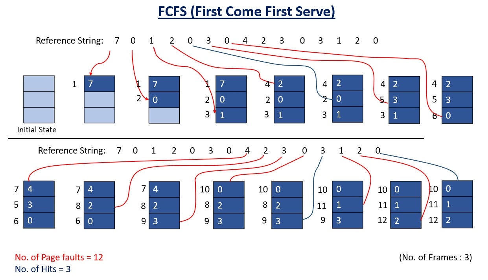

FCFS (First Come First Serve)
- In this algorithm, a queue is maintained. The page which is assigned the frame first will be replaced first. In other words, the page which resides at the rear end of the queue will be replaced on every page fault.
- However, FIFO is known to suffer from a problem known as Belady's anomaly which occurs when increasing the number of page frames results in an increase in the number of page faults for a given memory access pattern.
- Belady's anomaly proves that it is possible to have more page faults when increasing the number of page frames while using the First in First Out (FIFO) page replacement algorithm.
- For example, if we consider reference string 3, 2, 1, 0, 3, 2, 4, 3, 2, 1, 0, 4 and 3 slots, we get 9 total page faults, but if we increase slots to 4, we get 10 page faults.
